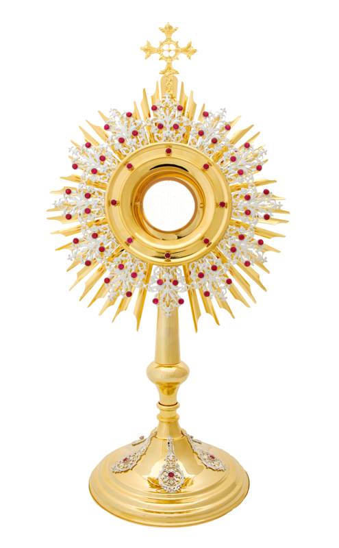
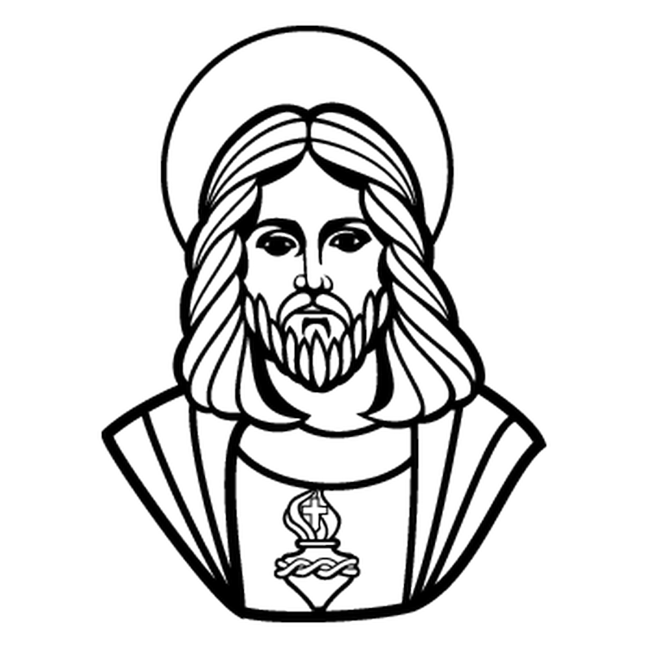

La Festividad del Corpus Christi tendrá lugar en Colombia en una fecha especial, así como en diferentes comunidades católicas de América Latina. !
Para este 2022 la Festividad del Corpus Christi se celebrará el lunes 20 de junio, en donde podremos ver las diversas actividades programadas por los católicas en todas las regiones del país.
 >Es costumbre realizar una eucaristía solemne en la Catedral Primada. Es tradicional, asimismo, la banda de guerra interpreta algunos temas eucarísticos en honor al día.
 >Corpus Christi es una fiesta de la Iglesia Católica destinada a celebrar la Eucaristía. Su principal finalidad es proclamar y aumentar la fe de la Iglesia Católica en Jesucristo presente en el Santísimo Sacramento.
>